IMPRESIÓN 3D – MOTOR DE DOS CILINDROS
By Briney Xiomara Vega Zavaleta
1. Diseño del Motor de 2 Cilindros en Autodesk Inventor
Paso 1: Crear Caja de dos Cilindros de Motor
A. Crear el Bloque Base del Motor
1. Abrir Autodesk Inventor:
- Inicia Autodesk Inventor y selecciona "Nuevo" y luego "Archivo de pieza" (Part).
- Establece las unidades de medida (milímetros o pulgadas, según el sistema que prefieras).
2. Dibuja un Rectángulo:
- En la vista superior, selecciona la herramienta Rectangle para crear el contorno base.
- Dimensiones: 253.870 mm (longitud) x 228.5 mm (ancho).
3. Extrusión:
- Después de dibujar el rectángulo, usa la herramienta Extrude para darle altura al bloque base.
- Altura: 210 mm, como se indica en las dimensiones.

B. Crear los Cilindros
1. Crear el Primer Cilindro:
- En la cara superior del bloque, crea un círculo usando la herramienta Circle.
- Diámetro: 80 mm.
- Coloca el círculo centrado en el bloque, a una distancia de 89.11 mm (según el dibujo).
- Usa Extrude para darle altura al cilindro. En este caso, la altura será de 210 mm (similar a la altura del bloque base).
- Esto formará el primer cilindro dentro del bloque.
2. Crear el Segundo Cilindro:
- Dibuja un círculo en la cara superior del bloque, similar al primer cilindro.
- Distancia entre cilindros: Usa la herramienta de restricción Distance para colocar el segundo cilindro a una distancia de 96.38 mm (de acuerdo a las dimensiones de la vista superior en las imágenes).
- Diámetro: 80 mm.
- Extrusión: Igual que el primer cilindro, usa Extrude para darle altura.
3. Posicionamiento de los Cilindros:
- Asegúrate de que ambos cilindros estén correctamente alineados y centrados en la base utilizando Constraints (restricciones).
C. Crear los Pasajes Internos
1. Crear Pasajes de Refrigeración:
- Si es necesario, puedes crear pasajes de refrigeración o de combustible dentro del bloque de cilindros.
- Usa la herramienta Extrude Cut para hacer cortes en las paredes de los cilindros o en la base del motor, de acuerdo con el diseño.
2. Agujeros de Fijación:
- En el lado del bloque de cilindros, utiliza la herramienta Hole para crear los agujeros de fijación para el montaje del motor. Los agujeros deben tener las dimensiones de 8 mm de diámetro.
3. Guardar el archivo:
- Guarda el archivo como Bloque_Base.ipt.
Paso 2: Crear el Pistón
1. Modelado del Pistón:
- Dibuja un círculo en el plano de la sección transversal del cilindro.
- Diámetro del pistón: 80 mm (para que encaje en el cilindro).
- Altura del pistón: 53 mm (según las especificaciones del pistón).
2. Crear el Canal del Bulón:
- En el pistón, usa la herramienta Hole para crear el agujero para el bulón.
- Diámetro del agujero: 19 mm (según las especificaciones del bulón y el anillo de compresión).
- Posición del agujero: Asegúrate de colocar el agujero en la parte superior central del pistón.
3. Modelar los Anillos de Compresión:
- Crea anillos de compresión utilizando la herramienta Revolve para generar los anillos alrededor del pistón.
- Anillo de compresión: Colócalo en la parte superior e inferior del pistón, con las dimensiones especificadas de acuerdo con el diseño.
4. Guardar el archivo:
- Guarda el archivo del pistón como Piston.ipt.
Paso 3: Crear el Retén del Bulón
1. Modelado del Retén:
- Dibuja un cilindro en el plano de la sección transversal del bulón.
- Diámetro del retén: 19 mm (según las dimensiones).
- Longitud: 61 mm.
- Utiliza la herramienta Extrude para dar volumen al retén.
2. Modelado del Anillo de Compresión:
- Usa la herramienta Extrude y Revolve para crear el anillo de compresión alrededor del pistón, con un grosor de 1.5 mm (según las dimensiones).
3. Guardar el archivo:
- Guarda el archivo del pistón como Reten.ipt.
Paso 4: Crear la Biela
1. Modelado de la Biela:
- Abre Inventor y selecciona Nuevo y luego Archivo de Pieza (Part).
- Asegúrate de que las unidades estén en milímetros.
2. Crear un círculo base (sección transversal):
- Selecciona el Plano de trabajo (X-Y) y usa la herramienta Circle para dibujar el contorno de la biela.
- Diámetro: 10 mm (según las medidas de la biela en las imágenes).
3. Extrusión de la base de la biela:
- Después de crear el círculo, selecciona la herramienta Extrude para darle volumen a la pieza.
- Altura de la biela: 135 mm (según las medidas proporcionadas).
- Asegúrate de que la biela tenga la forma básica y plana.
4. Crear los detalles (huecos y agujeros):
- En el extremo superior de la biela, crea un círculo con diámetro de 37 mm. Esto representará el agujero para el bulón.
- Utiliza Extrude Cut para hacer un corte y formar el agujero de la biela.
- Luego, utiliza Fillet para redondear los bordes de la biela con un radio de 10 mm.
- En el otro extremo de la biela, repite el mismo proceso para crear otro agujero para el pasador, usando un diámetro de 37 mm.
5. Fillet (redondeo) en los bordes:
- Usa Fillet con radio de 20 mm para redondear las esquinas laterales de la biela para darle un acabado más suave.
6. Guardar archivo:
- Guarda el archivo con el nombre Biela.ipt.
Paso 5: Crear Tapa de la Biela
1. Modelado de la Tapa Biela:
- Inicia un nuevo archivo de pieza en Inventor y selecciona el plano adecuado (X-Y).
- Usa la herramienta Circle para dibujar un círculo con un diámetro de 45 mm en la sección de la tapa de la biela.
2. Extrusión de la tapa:
- Usa la herramienta Extrude para darle 16 mm de altura a la tapa de la biela (según las especificaciones).
3. Corte interior para el pasador:
- En la parte central de la tapa de la biela, dibuja un círculo con diámetro de 27.5 mm para el agujero de ajuste.
- Usa Extrude Cut para crear este agujero en la tapa.
4. Crear los agujeros para los tornillos de fijación:
- Dibuja los agujeros necesarios para los tornillos con la herramienta Hole, especificando el diámetro y la ubicación correcta, según los dibujos de la tapa de la biela.
5. Fillet para los bordes:
- Usa la herramienta Fillet para añadir radios 0.5 mm a los bordes de la tapa de la biela.
6. Guardar archivo:
- Guarda este archivo como Tapa_Biela.ipt.
Paso 6: Crear Cojinete
1. Modelado del Cojinete:
- Crea un nuevo archivo de pieza en Inventor y selecciona el plano de trabajo.
- Dibuja un círculo de diámetro 45 mm.
2. Extrusión del cojinete:
- Usa la herramienta Extrude para darle una altura de 18 mm al cojinete.
3. Agujero central:
- Dibuja un círculo con diámetro de 42 mm en el centro de la base del cojinete.
- Utiliza Extrude Cut para perforar el agujero en la pieza.
4. Guardar archivo:
- Guarda el archivo como Cojinete.ipt.
Paso 7: Crear Cojinete
1. Modelado del Cigüeñal:
- Abre Autodesk Inventor y selecciona Nuevo > Archivo de Pieza (Part).
- Asegúrate de que las unidades estén configuradas en milímetros.
2. Dibuja la Forma Básica del Cigüeñal:
- Círculo Base:
- Dibuja un círculo con Ø55 mm en el plano X-Y (según el dibujo).
- Usa la herramienta Extrude para darle 54 mm de longitud a esta primera sección del cigüeñal (tal como aparece en la vista lateral).
3. Crear el Primer Redondeo (R22):
- Fillet:
- Selecciona los bordes del cilindro que acabas de crear y usa la herramienta Fillet para aplicar un radio de R22 en la parte superior de la sección.
- Esto dará la forma redondeada en la transición hacia la siguiente sección del cigüeñal.
4. Crear la Parte Intermedia :
- Diámetro de la Sección Intermedia:
- En el plano lateral, observa que el cigüeñal tiene diferentes diámetros. Dibuja un nuevo círculo con Ø42 mm (según las especificaciones del dibujo).
- Extrusión:
- Usa la herramienta Extrude para darle una longitud de 19 mm (como se muestra en el dibujo). Esto formará la sección del cigüeñal de diámetro Ø42 mm.
5. Crear los Contrapesos y Secciones del Cigüeñal:
- Redondeo (R10):
- En las zonas donde se producen cambios en el diámetro, como en los contrapesos, usa Fillet con un radio de R10 para suavizar las transiciones.
- Diámetro de la Sección Final:
- Crea otro círculo de Ø57 mm para la sección final del cigüeñal, ubicada en la parte más cercana al extremo del cigüeñal (según las vistas y las medidas).
- Extrusión:
- Usa Extrude para darle 38.40 mm de longitud a esta última parte del cigüeñal.
6. Crear los Agujeros para los Tornillos:
- Agujeros para Fijación:
- En las secciones indicadas para los agujeros (tal como se muestra en la vista inferior), utiliza la herramienta Hole para crear 6 agujeros con diámetro de 8 mm en la parte final del cigüeñal.
- Coloca los agujeros en las posiciones mostradas en el dibujo.
7. Crear la Sección Transversal (Section R-R):
- Corte de la Sección:
- Usa Section View para crear la sección transversal del cigüeñal (sección R-R).
- Asegúrate de que el corte sea preciso y que coincida con las especificaciones del dibujo, como los diámetros y los radios de curvatura.
8. Fillet Adicional en las Secciones:
- Aplicar Fillet en las Esquinas:
- Aplica un radio R22 en las secciones que lo requieren, como en la parte más baja de la sección transversal.
9. Guardar el Archivo:
- Guardar:
- Una vez terminado el modelado, guarda el archivo con un nombre apropiado, como Cigueñal.ipt.
Paso 8: Crear el Retenedor
Modelo A:
1. Modelado para el retenedor:
- Crea un nuevo archivo de pieza y selecciona el plano adecuado.
- Usa la herramienta Circle para crear un círculo con diámetro de 26.11 mm (en la vista inferior de la imagen).
2. Extrusión del retenedor:
- Usa la herramienta Extrude para darle una altura de 20 mm al retenedor.
3. Forma de la pieza:
- Dibuja el perfil lateral de la pieza en el Plano de trabajo.
- Asegúrate de que la longitud sea 122 mm y la altura de 47.53 mm según las dimensiones proporcionadas en el dibujo.
- Usa la herramienta Extrude para darle volumen a la pieza. Asegúrate de que la extrusión tenga una altura de 40 mm (como indica la vista lateral de la pieza).
4. Crear la Forma Principal de la Pieza:
- Dibuja el perfil lateral de la pieza en el Plano de trabajo.
- Asegúrate de que la longitud sea 122 mm y la altura de 47.53 mm según las dimensiones proporcionadas en el dibujo.
- Usa la herramienta Extrude para darle volumen a la pieza. Asegúrate de que la extrusión tenga una altura de 40 mm (como indica la vista lateral de la pieza).
5. Realizar el Corte de la Cavidad Interna:
- Dibuja un círculo en el centro de la parte superior de la pieza, con diámetro de 26.11 mm (tal como se muestra en la parte inferior de la pieza).
- Utiliza Extrude Cut para cortar este círculo a través de la pieza, creando una cavidad interna.
6. Crear los Agujeros para Tornillos:
- En la parte inferior de la pieza, dibuja dos círculos con diámetro de 8 mm para los agujeros de fijación.
- Utiliza la herramienta Hole para crear los agujeros en las posiciones indicadas.
7. Aplicar Radios en las Esquinas:
- Usa la herramienta Fillet para redondear las esquinas de la pieza, utilizando R26 en la parte superior y R12 en la parte inferior, tal como se indica en las vistas.
8. Guardar archivo:
- Guarda el archivo con un nombre apropiado, como Retenedor_A.ipt.
Modelo B:
1. Modelado del Retenedor:
- En el plano X-Y, usa la herramienta Circle para dibujar un círculo con diámetro de 38.38 mm (según las dimensiones proporcionadas en la imagen).
- Luego, dibuja un círculo con diámetro de 25 mm centrado en el primer círculo para la cavidad interna de la pieza.
2. Extrusión de la Pieza:
- Usa la herramienta Extrude para darle volumen a la pieza.
- Altura de la pieza: 20 mm, que es la distancia especificada en el dibujo.
3. Crear la Cavidad Interna (Corte):
- Dibuja un círculo dentro de la pieza, utilizando las mismas dimensiones para el agujero central, Ø25 mm.
- Usa la herramienta Extrude Cut para crear la cavidad interna a través de la pieza.
4. Crear los Agujeros para Tornillos:
- En la parte inferior de la pieza, dibuja dos círculos Ø8 mm para los agujeros de fijación (según la vista lateral).
- Utiliza la herramienta Hole para crear los agujeros en las posiciones indicadas.
5. Fillet para los Bordes:
- Utiliza la herramienta Fillet para agregar un radio de R26 en la parte superior de la pieza y R12 en la parte inferior, como se muestra en el dibujo.
- Asegúrate de aplicar fillet en las esquinas donde las superficies se encuentran.
6. Guardar el Archivo:
- Una vez completado el modelado, guarda el archivo con el nombre RetenedorB.ipt.
2. Preparación para Impresión 3D
Objetivo:
Preparar el diseño para impresión 3D en el FabLab.
Pasos:
- Convertir el Modelo a STL:
- Asegúrate de exportar el diseño a formato STL en Inventor, que es el formato adecuado para la impresión 3D.
- Abrir el Archivo en un Software de Impresión 3D (Ej. Bambu lab, Cura):
- Importa el archivo STL a un software de impresión 3D para generar el código G necesario para la impresora 3D.
- Ajustes de Impresión:
- Elige el material adecuado, como PLA, y configura la impresora. Define la resolución de la impresión y el soporte para piezas complejas si es necesario.
- Asegúrate de elegir los parámetros correctos de capa, velocidad de impresión, y temperatura.
- Verificación de la Impresión:
- Prueba de impresión en escala 100 (Tapa Biela) 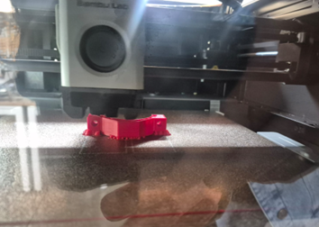
- Tapa biela impresa escala 100 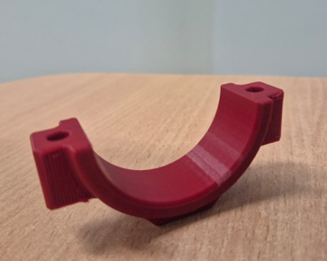
- Tapa biela impresa escala 80 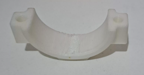
- Impresión del Modelo:
- Impresión de pistón, biela, tapa biela, bulón 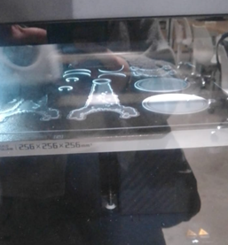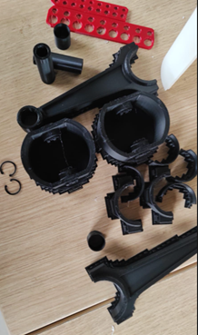
- Impresión caja de cilindros 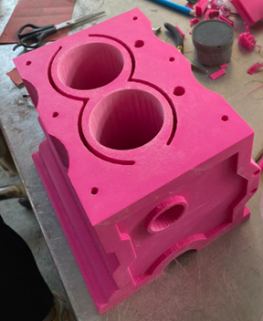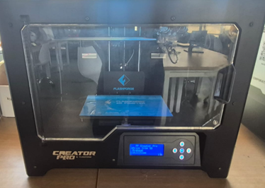
- Impresión cigüeñal 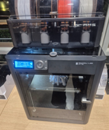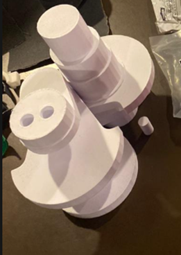 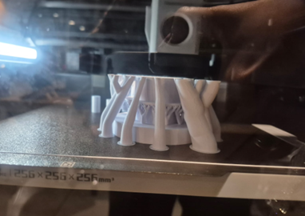
- Impresión retenedor 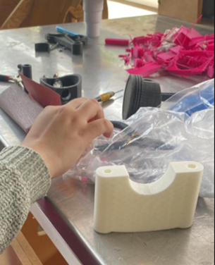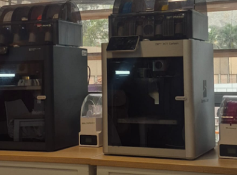
- Postprocesamiento:
- Después de la impresión, se deben retirar los soportes de las piezas impresas y realizar cualquier acabado superficial necesario, como lijado o pintura.
Antes de iniciar la impresión completa, realiza una prueba de impresión de una parte pequeña del motor para verificar que todo esté correcto.
Imprime cada una de las partes del motor de 2 cilindros en 3D, asegurándote de utilizar el material adecuado y que el proceso de impresión sea estable.
 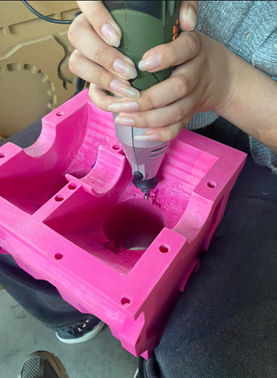
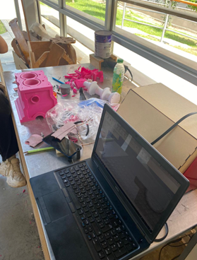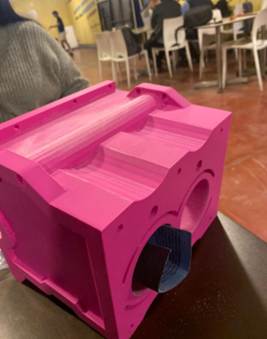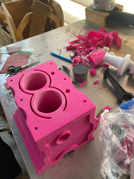
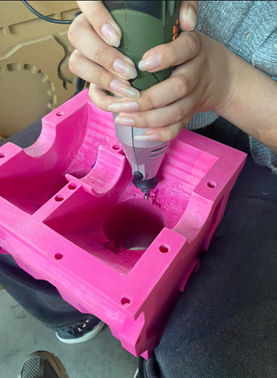
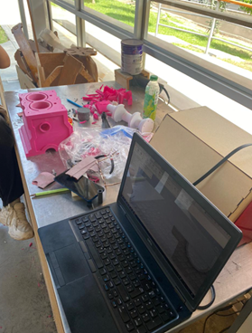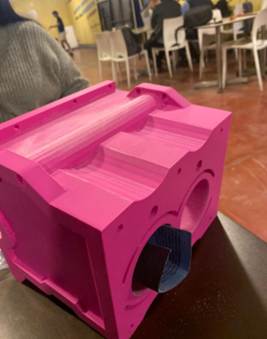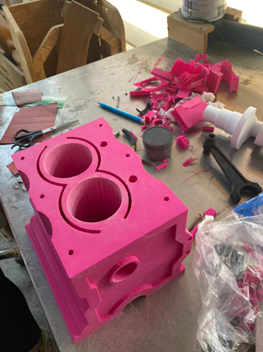
3. Montaje y Evaluación Final
Objetivo:
Evaluar la calidad del motor impreso y verificar que todas las piezas encajen adecuadamente.
Pasos:
- Montaje del Motor:
- Una vez impresas todas las piezas, realiza el ensamblaje del motor de 2 cilindros.
- Verifica que todos los componentes se ensamblen correctamente sin interferencias. 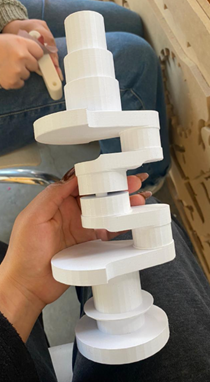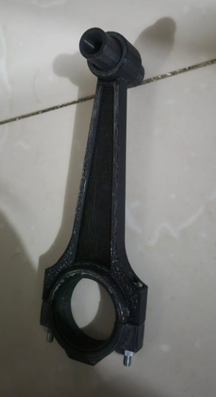 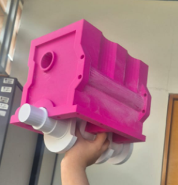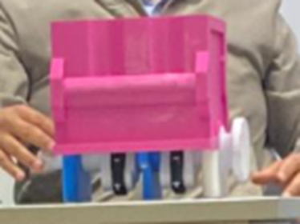
- Pruebas de Funcionamiento:
- Si el diseño lo permite, prueba el funcionamiento del motor para verificar la funcionalidad del modelo.
- Análisis Final:
- Evalúa la precisión de las dimensiones del modelo, el acabado superficial, y la resistencia de las piezas.